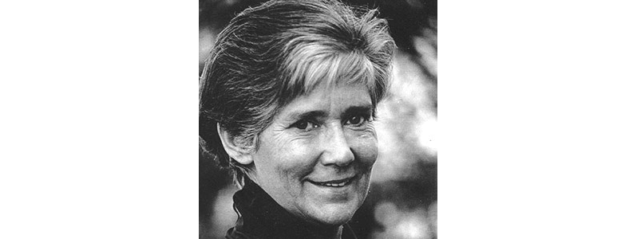

¿DONDE SE ORIGINO?
El feminicidio es un neologismo que proviene del vocablo inglés femicide, que se refiere al asesinato de mujeres por razones de género, fue Diana Russell quien utilizó el término femicide por primera vez en 1976 ante el Tribunal Internacional sobre Crímenes contra la Mujer en Bruselas, definiendo así las formas de violencia contra la mujer. Russell, junto con Jane Caputi, redefinen este concepto en el año 1990 como "el asesinato de mujeres por hombres motivado por el odio, desprecio, placer o sentido de posesión hacia las mujeres".

Para Latinoamérica, fue Marcela Lagarde quien comenzó a utilizar el término de feminicidio en lugar de femicidio, debido a que este último seria análogo a la palabra homicidio y solo significaría asesinato de mujeres; Mientras que el feminicidio se da cuando las condiciones históricas generan prácticas sociales agresivas y hostiles que atentan contra la integridad, el desarrollo, la salud, las libertades y la vida de las mujeres. Para Lagarde el feminicidio es un crimen de Estado que incluye un componente de impunidad y que ocurre en tiempo, espacio, maltrato, vejaciones y daños continuos contra mujeres y niñas, que conduce a la muerte de algunas de las víctimas.
| ANTERIOR | MENU |